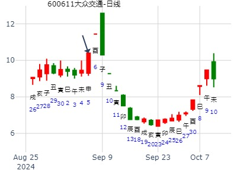

1月4日-8日上证走势--悟道喜悦
时间: 2016-01-03 9:11
干支: 乙未年戊子月甲申日 (旬空: 午未 )
天风姤 风山渐(归魂)
六神 伏神 本 卦 变 卦
玄武 ▅▅▅▅▅ 父母戌土 ▅▅▅▅▅ 妻财卯木 应
白虎 ▅▅▅▅▅ 兄弟申金 ▅▅▅▅▅ 官鬼巳火
腾蛇 ▅▅▅▅▅ 官鬼午火 应Ｏ→ ▅▅ ▅▅ 父母未土
勾陈 ▅▅▅▅▅ 兄弟酉金 ▅▅▅▅▅ 兄弟申金 世
朱雀 妻财寅木▅▅▅▅▅ 子孙亥水 Ｏ→ ▅▅ ▅▅ 官鬼午火
青龙 ▅▅ ▅▅ 父母丑土 世 ▅▅ ▅▅ 父母辰土
测苏州银行2.20癸巳星期四-2.28哪日顶？
男 占事：没填
公历起卦时间：2020年2月20日17时4分 (电脑自动)
干支：庚子年 戊寅月 癸巳日 辛酉时 （日空：午未）
乾宫：天风姤 艮宫：风山渐 (归魂)
六神 伏神 本 卦 变 卦
白虎 父母壬戌土 ▅▅▅▅▅ 妻财辛卯木 ▅▅▅▅▅ 应
螣蛇 兄弟壬申金 ▅▅▅▅▅ 官鬼辛巳火 ▅▅▅▅▅
勾陈 官鬼壬午火 ▅▅▅▅▅ 应 ○→ 父母辛未土 ▅▅ ▅▅
朱雀 兄弟辛酉金 ▅▅▅▅▅ 兄弟丙申金 ▅▅▅▅▅ 世
青龙 妻财甲寅木 子孙辛亥水 ▅▅▅▅▅ ○→ 官鬼丙午火 ▅▅ ▅▅
玄武 父母辛丑土 ▅▅ ▅▅ 世 父母丙辰土 ▅▅ ▅▅
7月大盘周卦：姤之渐。上善若水
时间: 2019-06-29
干支: 己亥年庚午月丁酉日 (旬空: 辰巳 )
天风姤 风山渐(归魂)
六神 伏神 本 卦 变 卦
青龙 ▅▅▅▅▅ 父母戌土 ▅▅▅▅▅ 妻财卯木 应
玄武 ▅▅▅▅▅ 兄弟申金 ▅▅▅▅▅ 官鬼巳火
白虎 ▅▅▅▅▅ 官鬼午火 应Ｏ→ ▅▅ ▅▅ 父母未土
腾蛇 ▅▅▅▅▅ 兄弟酉金 ▅▅▅▅▅ 兄弟申金 世
勾陈 妻财寅木▅▅▅▅▅ 子孙亥水 Ｏ→ ▅▅ ▅▅ 官鬼午火
朱雀 ▅▅ ▅▅ 父母丑土 世 ▅▅ ▅▅ 父母辰土
大众交通906-925--金玉堂铜钱卦
时间: 2024-09-05
干支: 甲辰年壬申月壬申日 (旬空: 戌亥 )
天风姤 风山渐(归魂)
六神 伏神 本 卦 变 卦
白虎 ▅▅▅▅▅ 父母戌土 ▅▅▅▅▅ 妻财卯木 应
腾蛇 ▅▅▅▅▅ 兄弟申金 ▅▅▅▅▅ 官鬼巳火
勾陈 ▅▅▅▅▅ 官鬼午火 应Ｏ→ ▅▅ ▅▅ 父母未土
朱雀 ▅▅▅▅▅ 兄弟酉金 ▅▅▅▅▅ 兄弟申金 世
青龙 妻财寅木▅▅▅▅▅ 子孙亥水 Ｏ→ ▅▅ ▅▅ 官鬼午火
玄武 ▅▅ ▅▅ 父母丑土 世 ▅▅ ▅▅ 父母辰土
